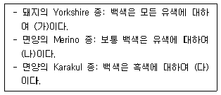
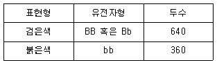
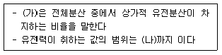
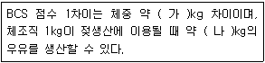
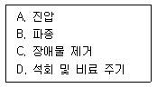

축산기사 (2020-06-06 기출문제)
1과목: 가축육종학
1. 돼지의 경제형질 중 일반적으로 유전력이 가장 높은 것은?
- 체장
- 사료효율
- 복당 산자수
- 이유 후 일당 증체량
(정답률: 68%)

2. 상염색체에 존재하는 유전자에 의해 발현되나 그 개체의 발현은 성호르몬에 의해 영향을 받는 유전현상은?
- 종성유전
- 반성유전
- 한성유전
- 모계유전
(정답률: 69%)
3. 육우의 주요 경제형질이 아닌 것은?
- 번식형질
- 발육형질
- 도체형질
- 비유형질
(정답률: 74%)
4. 암탉의 조숙성을 나타내는 것으로 가장 적합한 것은?
- 초산일령
- 연속 산란일령
- 산란사 편입일령
- 최고 산란율 도달일령
(정답률: 81%)
5. 근친교배의 영향으로 옳지 않은 것은?
- 번식능력 저하
- 유전자의 고정
- 강건한 자손 생산
- 이형접합체의 비율 감소
(정답률: 86%)
6. 다음 중 (가), (나), (다)에 알맞은 내용은?

- 가: 열성, 나: 열성, 다: 열성
- 가: 열성, 나: 우성, 다: 열성
- 가: 우성, 나: 열성, 다: 열성
- 가: 우성, 나: 우성, 다: 열성
(정답률: 74%)
7. 품종의 평균 생시체중은 A품종은 40kg이고, B품종은 60kg일 때 A품종과 B품종 간의 교잡으로 생산된 합성종의 생시체중은 50kg이었다. 이 때 합성종의 잡종강세(%)의 강도는?
- 0
- 10
- 15
- 20
(정답률: 69%)
8. 1000마리 소의 모색을 조사한결과가 아래와 같을 때 붉은 모색에 대한 유전자 빈도는 얼마인가? (단, 유전적 평형상태를 가정한다)

- 0.4
- 0.6
- 0.8
- 1.0
(정답률: 72%)
9. 다음 염색체 이상 현상 가운데 성격이 다른 것은?
- 중복현상
- 이수현상
- 역위현상
- 전좌현상
(정답률: 73%)
10. 다음 중 반복력의 계산이 어려운 것은?
- 산차
- 양의 산모량
- 돼지의 산자 수
- 자손의 이유시체중
(정답률: 59%)
11. 생후 160일령에 이유한 송아지의 이유시 체중이 180kg 이었고 360일령에 350kg이 되었다면, 이 소의 이유 후 일당 증체량(kg)은?
- 0.65
- 0.75
- 0.85
- 0.95
(정답률: 78%)
12. 선발의 효과를 높이는 데 불리한 것은?
- 축군의 개체 간 차이가 커야 한다
- 축군의 개체 간 차이가 작아야 한다
- 선발형질의 유전력이 높아야 한다
- 세대간격이 짧아야 한다
(정답률: 79%)
13. 소에 있어 1번 염색체와 29번 염색체가 융합하여 하나의 염색체를 만드는 경우가 있는데 이와 같은 현상을 무엇이라 하는가?
- Robertsonian 전좌
- Robertsonian 역위
- Robertsonian 결실
- Klinefelter 증
(정답률: 66%)
14. 선발차란 무엇인가?
- 선발된 개체들의 평균 능력
- 선발된 개체들의 평균과 가장 능력이 우수한 개체와의 차이
- 선발전의 집단 평균과 선발된 집단 평균과의 차이
- 선발전의 집단 평균과 가장 능력이 우수한 개체와의 차이
(정답률: 78%)
15. 다음 중 (가), (나)에 알맞은 내용은?

- (가): 넓은 의미의 유전력, (나): 0~1
- (가): 넓은 의미의 유전력, (나): 0~0.5
- (가): 좁은 의미의 유전력, (나): 0~1
- (가): 좁은 의미의 유전력, (나): 0~0.5
(정답률: 71%)
16. 좌위간에 멘델의 독립법칙이 적용되는 상태에서 유전자형이 AaBbCc인 개체와 AABbCc 개체간의 교배에서 AABbCc인 자손을 얻을 확률은?
- 1/4
- 1/8
- 1/16
- 1/32
(정답률: 72%)
17. 유각 백색의 쇼트혼종 소와 무각 적색의 쇼트혼종 소를 교배할 때 생산되는 F1의 표현형은?
- 유각 , 적색
- 유각, 조모
- 무각, 적색
- 무각, 조모
(정답률: 62%)
18. 조합능력을 개량하기 위한 육종법은?
- 간접선발법
- 선발지수법
- 상반반복선발법
- 계통교배법
(정답률: 57%)
19. 우성백색 유전자를 가진 Leghorn 종(IICC)과 열성백색 유전자를 가진 Wyandotte종(iicc)을 교배하여 얻은 F1끼리 다시 교배 시켜 얻은 F2의 백색과 유색의 분리비는?
- 15:1
- 14:2
- 13:3
- 12:4
(정답률: 67%)
20. 소의 체위 측정에서 수평면에서 기갑최고부까지의 길이를 무엇이라 하는가?
- 체고
- 체장
- 고장
- 십자부고
(정답률: 82%)
2과목: 가축번식생리학
21. 소의 지속 발정 원인으로 옳은 것은?
- 포유
- 난포 미발달
- 영구 황체 존재
- 발육 난포의 장기간 존속
(정답률: 66%)
22. 닭의 산란주기를 바르게 설명한 것은?
- 한 마리의 암탉이 1년 중 산란한 계란의 수
- 한 마리의 암탉이 1개월 중 산란한 계란의 수
- 한 마리의 암탉이 연일 산란하는 계란의 수
- 한 마리의 암탉이 연일 산란하는 시간의 주기적 변화
(정답률: 59%)
23. 음낭의 주요 기능으로 옳은 것은?
- 정소의 온도조절
- 정자의 온도조절
- 정자의 운반기능
- 정자의 생산기능
(정답률: 66%)
24. 암컷 생식기관과 배란에 관한 설명으로 옳지 않은 것은?
- 난소, 난관, 자궁, 질, 외부 생식기로 구성되어 있다
- 자궁각은 수정 장소이다
- 소나 말은 일반적으로 한 발정기에 1개의 난자를 방출한다
- 그라아프난포가 파열되어 난자가 방출된다
(정답률: 68%)
25. 비유가 시작될 때 분비가 상승하는 호르몬이 아닌 것은?
- 프로락틴
- 프로게스테론
- 성장호르몬
- 글루코코르티코이드
(정답률: 51%)
26. 가축에서 분만을 인위적으로 유도하고자 할 때 사용할 수 없는 호르몬은?
- 인도메타신
- 텍사메타손
- 루코코르티코이드
- 프로스타글란딘(PGF2a)
(정답률: 52%)
27. 소의 세균성 급, 만성 전염병으로 유산을 일으키는 것은?
- 브루셀라병
- 과립성 질염
- 트리코모나스병
- 톡소플라즈마병
(정답률: 82%)
28. 돼지의 평균 번식 적령기로 옳은 것은?
- 수컷: 7개월경, 암컷: 10개월령
- 수컷: 10개월경, 암컷: 10개월령
- 수컷: 13개월경, 암컷: 15개월령
- 수컷: 20개월경, 암컷: 20개월령
(정답률: 65%)
29. 수컷의 포유동물에서 정자형성과 관계가 없는 호르몬은?
- 황체형성호르몬(LH)
- 난포자극호르몬(FSH)
- 안드로겐
- 바소프레신
(정답률: 71%)
30. 인공수정을 위한 소의 수정란 이식 시 어떤 단계의 수정란이 가장 높은 임신율을 보이는가?
- 8세포기
- 16세포기
- 상실기
- 배반포기
(정답률: 82%)
31. 가축의 성 성숙에 미치는 주 요인이 아닌 것은?
- 영양공급
- 계절
- 온도
- 운동
(정답률: 76%)
32. 암컷의 생식기관이 발생되는 과정에서 난소의 발생과 가장 관계가 깊은 것은?
- 중신
- 생식선 융기
- 생식 결절
- 생식 추벽
(정답률: 72%)
33. 부고환의 기능으로 옳지 않은 것은?
- 정자의 운반
- 정자의 농축
- 정자의 성숙
- 정자의 분열
(정답률: 74%)
34. 유선이 퇴화되는 과정에 대한 설명으로 옳지 않은 것은?
- 유선포로 유입되는 혈류량이 감소한다
- 저류된 유즙에 의해 유선포의 내압이 상승한다
- 유선포계의 퇴화와 동시에 유선관계의 퇴화도 일어난다
- 분비상피세포는 세포소멸(apoptosis)기전에 의해 파괴, 소실된다
(정답률: 42%)
35. 가장 확실한 젖소의 발정 징후는?
- 승가를 허용한다
- 큰소리로 운다
- 비유가 감소한다
- 식욕이 감퇴한다
(정답률: 83%)
36. 젖소의 유방에서 유즙이 생성, 운반되는 경로가 바르게 연결된 것은?
- 유선포 -> 유선관 -> 유선소엽 -> 유선조 -> 유두관
- 유선포 -> 유소엽 -> 유선관 -> 유선조 -> 유두관
- 유선포 -> 유선조 -> 유선관 -> 유선소엽 -> 유두관
- 유선포 -> 유선소엽 -> 유선조 -> 유선관 -> 유두관
(정답률: 53%)
37. 난포자극호르몬(FSH)의 작용으로만 나열된 것은?
- 자궁수축, 분만촉진
- 임신유지, 태아발달
- 유선자극, 유즙분비
- 난포발육, 지지세포자극
(정답률: 74%)
38. 1회 사정정액의 평균치 정자농도(정자수/ml)가 가장 낮은 가축은?
- 소
- 돼지
- 산양
- 닭
(정답률: 58%)
39. 뇌하수체 전엽에서 분비되는 호르몬으로서 비유유지에 필요한 호르몬은?
- 프로락틴
- 프로게스테론
- 황체형성호르몬(LH)
- 성선자극호르몬 방출호르몬(GnRH)
(정답률: 70%)
40. 다음 중 뇌하수체전엽호르몬이 아닌 것은?
- 안드로겐
- 프로락틴
- 난포자극호르몬(FSH)
- 황체형성호르몬(LH)
(정답률: 68%)
3과목: 가축사양학
41. 단백질 품질을 측정하는 생물가(BV)의 설명으로 맞는 것은?
- 가소화 단백질의 체단백질로의 이용가치
- 유사 단백질의 체내 이용가치
- 에너지의 증체에 대한 이용률
- 가소화 영양소의 총 열량 수준
(정답률: 69%)
42. 젖소의 초유에 대한 설명으로 틀린 것은?
- 송아지 생후 24시간 이후에 먹이는 것이 가장 좋다
- 초유는 태변 등 장내 잔류물의 배출을 촉진한다
- 초유는 면역글로불린을 다량 함유하고 있어 질병 저항력을 갖게 한다
- 처음 착유한 초유는 보통 우유보다 고형물함량이 약 2배 많다
(정답률: 81%)
43. 다음의 사료 구성분 중 소화율이 가장 낮은 물질은?
- 리그닌
- 단백질
- 전분
- 펙틴
(정답률: 75%)
44. 지방산이 β-산화작용을 받게 되면 TCA 회로에서 Acetyl-CoA를 생성한다. 이 때 Acetyl-CoA 1분자가 TCA 회로에서 완전산화될 때 생성되는 ATP 수는?
- 12 ATP
- 15 ATP
- 30 ATP
- 35 ATP
(정답률: 51%)
45. 비육우의 근내지방도 증가를 위한 영양사양학적 기술로 가장 적합하지 않은 것은?
- 비타민A 조절급여
- 비타민E 조절급여
- 반추위 보호 아미노산 급여
- 반추위 보호지방산 급여
(정답률: 42%)
46. 동물 내에서의 물의 생리적 기능을 설명한 것으로 틀린 것은?
- 용매제로서 우수하고 이상적인 물질이다
- 비열과 증발열이 적어 체온상승을 막아준다
- 영양소와 대사 생성물의 수송을 돕는다
- 체액의 구성 물질이며 조직기관의 관절부에서 윤활유 역할을 한다
(정답률: 72%)
47. 반추위 내에서 섬유소를 분해, 이용하는 미생물이 단백질 합성을 위해 중요한 질소원으로써 이용하는 것은?
- 초산
- 프로피온산
- 우회단백질
- 비단백태질소화합물
(정답률: 75%)
48. 반추위에서 생성되는 휘발성 지방산 중 유지방 합성에 가장 많이 이용되는 것은?
- 구연산
- 초산
- 프로피온산
- 젖산
(정답률: 58%)
49. 분만 후 젖소의 유열을 예방하기 위한 분만 전 건유기의 사양관리로 적합한 것은?
- 사료 중 칼슘(Ca) 함량을 줄인다
- 사료 중 마그네슘(Mg) 함량을 높인다
- 사료 중 칼륨(K) 함량을 높인다
- 사료 중 인(P) 함량을 줄인다
(정답률: 58%)
50. 신생 자돈의 보온 적온은?
- 30도 정도
- 20도 정도
- 15도 정도
- 10도 정도
(정답률: 73%)
51. 유지율이 3.2%인 우유를 1일 22kg 생산할 경우 유지율이 4%인 표준유로 계산하면 약 얼마인가?
- 15kg
- 19.4kg
- 20.1kg
- 22kg
(정답률: 67%)
52. 사일리지의 적정발효와 품질보존을 위해 충분히 생성되어야 하는 유기산은?
- 초산
- 프로피온산
- 젖산
- 낙산
(정답률: 71%)
53. 식물성 사료에서 인(phosphorus)의 이용성이 저하되는 형태는 무엇인가?
- Trypsin inhibitor
- Phytate
- Cholecystokinin
- 1,25-dihydroxy cholecalciferol
(정답률: 59%)
54. 요소(urea)를 이용하기 부적합한 가축은?
- 젖소
- 돼지
- 육우
- 산양
(정답률: 67%)
55. 위생적인 착유 순서로서 가장 올바른 것은?
- 기기소독, 세척 -> 유방세척 -> 유방건조 -> 전착유 -> 유두소독 -> 유두컵 장착 -> 착유 -> 유두컵 제거
- 기기소독, 세척 -> 유방세척 -> 유두소독 -> 유방건조 -> 전착유 -> 유두컵 장착 -> 착유 -> 유두컵 제거 -> 유두소독
- 기기소독, 세척 -> 전착유 -> 유방세척 -> 유방건조 -> 유두컵 장착 -> 착유 -> 유두컵 제거 -> 유두소독
- 기기소독, 세척 -> 유방세척 -> 전착유 -> 유두소독 -> 유두컵 장착 -> 착유 -> 유두컵 제거 -> 유방건조
(정답률: 61%)
56. 효율적인 비육돈 사료급여 방법으로 가장 적합하지 않은 것은?
- 정육생산을 높이기 위한 사료 급여
- 암수분리 사육 및 암, 수에 적절한 사료 급여
- 비육 후기에 고에너지 수준의 사료 급여
- 육성기보다 단백질 수준이 낮은 사료 급여
(정답률: 48%)
57. 가축의 신체충실지수(BCS : body condition score)에 관한 내용으로 (가), (나)에 알맞은 숫자는?

- (가) : 60, (나): 7
- (가) : 80, (나): 15
- (가) : 100, (나): 7
- (가) : 125, (나): 15
(정답률: 59%)
58. 산란계 사양의 점등 관리에 대한 설명으로 틀린 것은?
- 산란기간의 점등시간 연장은 산란을 촉진시키는 역할을 한다
- 점등 관리로 육성계의 조기 성성숙을 억제시킬 수 있다
- 점등시간의 연장은 아침과 저녁으로 나누어 조절하는 것이 좋다
- 점등시간의 연장을 통해 닭의 뇌하수체 후엽을 자극하여 난포자극호르몬이 분비된다
(정답률: 58%)
59. 옥수수로 전분 또는 포도당을 만들 때 부산물로 나오는 것은?
- 당밀
- 전분박
- 주정박
- 글루텐피드
(정답률: 68%)
60. 병아리 육추 시 탁우성(쪼는 성질)이 발생하는 원인과 거리가 먼 것은?
- 밀사하고 있을 때
- 직사광선의 부족으로 너무 어두웠을 때
- 지나친 농후사료로 섬유질이 부족할 때
- 사료 중 비타민, 단백질, 무기성분이 결핍되었을 때
(정답률: 63%)
4과목: 사료작물학 및 초지학
61. 목초 조성 초기 톱핑(topping)의 목적은?
- 추비 효과
- 가축운동 효과
- 병충해 방제 효과
- 목초의 분얼촉진 효과
(정답률: 70%)
62. 젖소 50두를 방목하기 위해 1m2의 방형틀을 이용하여 목초 수량을 조사한 결과 목초 수량이 0.5kg/m2 이었다. 방목지 면적이 1.5ha라면 목초수량(A)과 1두당 섭취할 수 있는 양(B)은?
- A: 7500kg B: 150kg
- A: 6500kg B: 120kg
- A: 5500kg B: 90kg
- A: 4500kg B: 60kg
(정답률: 64%)
63. 옥수수의 영양소 중 생육이 진행됨에 따라 함량이 증가되는 것은?
- 조섬유
- 조회분
- 조단백질
- 가용무질소물
(정답률: 43%)
64. 중부지방의 작부체계에 관한 설명으로 옳은 것은?
- 수량면에서 볼 때 수단그라스계 잡종과 호밀 만생종의 조합이 가장 이상적이다.
- 가능하면 많은 작물을 파종하는 것이 좋으므로 연간 2모작보다는 3모작이, 3모작보다는 4모작이 좋다
- 주작물인 옥수수의 수량이 저하되지 않는 범위에서 부작물의 숙기를 결정하여야 한다
- 남부지방에서는 일반적으로 이탈리안 라이그라스보다 호밀이 부작물로 적당하다
(정답률: 68%)
65. 사료작물의 유해성물질인 청산(HCN)에 관한 설명으로 옳지 않은 것은?
- 수수, 수단그라스계 교잡종에 많이 함유되어 있다
- 가뭄이 있거나 서리가 있을 때 함량이 특히 낮다
- 글루코시드 듀린(glucoside-dhurrin)이 반추위 미생물에 의해 가수분해 될 때 형성된다
- 가축의 혈액에서 시아노헤모글로빈(cyanohemoglobin)을 형성하여 산소 운반을 방해한다
(정답률: 71%)
66. 화본과 목초에 속하는 것은?
- 전동싸리
- 매듭풀
- 오리새
- 비수리
(정답률: 52%)
67. 양질의 건초를 제조하는 방법으로 옳은 것은?
- 궂은 날씨가 잦을 때 제조할 것
- 맑은 날 단시간 내에 건조할 것
- 야간에는 이슬을 맞힐 것
- 장시간 동안 서서히 말릴 것
(정답률: 71%)
68. 초지 혼파의 장점에 해당되는 것은?
- 파종이 편리하다
- 종자를 절약한다
- 관리하기가 쉽다
- 목초 영양분의 균형을 맞출 수 있다
(정답률: 77%)
69. 사료작물 귀리의 일반적인 특징이 아닌 것은?
- 1년생 또는 월년생 작물이다
- 여름철에는 서늘하고 습하며, 겨울철에는 따뜻한 기후 조건에서 재배가 가능하다
- 생육적지는 배수가 잘 되고 토양수분이 충분한 양토나 사양토이다
- 수확적기는 황숙기가 지난 후이다
(정답률: 61%)
70. 원형 곤포를 이용한 비닐 랩 사일리지 조제 작업 단계가 순서대로 나열된 것은?
- 예취 -> 집초 -> 곤포 -> 비닐감기 -> 개별저장
- 예취 -> 곤포 -> 비닐감기 -> 집초 -> 개별저장
- 곤포 -> 예취 -> 집초 -> 비닐감 기-> 개별저장
- 곤포 -> 집초 -> 비닐감기 -> 예취 -> 개별저장
(정답률: 75%)
71. 겉뿌림법으로 초지를 조성하고자 할 때, 그 순서가 옳은 것은?

- A → C → D → B
- C → D → B → A
- B → A → C → D
- D → C → A → B
(정답률: 66%)
72. 다음 중 가축에서 소화율이 가장 낮은 세포벽 구성 물질은?
- 전분
- 펙틴
- 셀룰로오스
- 가소화단백질
(정답률: 67%)
73. 다년생 콩과(두과) 목초에 해당하는 것은?
- 레드클로버
- 스위트클로버
- 화이트클로버
- 앨사이크클로버
(정답률: 63%)
74. 4ha의 방목지에 체중 500kg인 젖소 10마리와 체중 250kg인 송아지 6마리를 200일간 방목하였다면 단위 면적 당 방목일(cow-day: CD)은?
- 600
- 650
- 1500
- 1080
(정답률: 55%)
75. 목초가 재생을 위해 저장하는 영양소의 주 형태는?
- 무기질
- 지방
- 탄수화물
- 단백질
(정답률: 72%)
76. 사료작물과 우리나라에서 개발된 작물 품종이 바르게 짝지어진 것은?
- 호밀 - 광평옥
- 수수 - 녹양
- 귀리 - 유연
- 이탈리안라이그라스 - 코그린
(정답률: 55%)
77. 답리작에 적합한 작물의 특징이 아닌 것은?
- 다년생이어야한다
- 내습성이 강해야 한다
- 내한성이 강해야 한다
- 봄에 생산성이 높아야 한다
(정답률: 57%)
78. 화본과 목초의 예취 적기에 대한 설명 중 옳은 것은?
- 화본과 목초는 출수초기가 예취적기이다
- 2번초 이후의 예취적기는 황숙기이다
- 생육단계와 무관하게 30일 간격으로 예취한다
- 파종 후 90일 전후이다
(정답률: 62%)
79. 여름철 초지관리에 알맞은 방법이라 할 수 없는 것은?
- 과방목이 되지 않게 한다
- 질소비료를 다량 사용한다
- 칼리 등 광물질균형을 맞춘다
- 목초의 높이를 적당하게 하여 장마기를 넘긴다
(정답률: 77%)
80. 식물의 세포벽 구성물질 총 함량을 확인할 수 있는 성분은?
- 실리카(silica)
- 리그닌(lignin)
- 중성세제불용섬유소(NDF)
- 헤미셀룰로오스(hemicellulose)
(정답률: 55%)
5과목: 축산경영학 및 축산물가공학
81. 이윤극대화의 조건에 해당되는 것은?
- 한계비용의 감소
- 평균비용보다 낮은 가격
- 한계수입과 한계비용의 일치
- 총수익과 총비용의 일치
(정답률: 77%)
82. 감가상각비 계산방법의 종류로 옳은 것은?
- 정액법
- 손익분기법
- 이자계산법
- 자산재평가법
(정답률: 75%)
83. 생산량의 증감과 무관하게 지불되는 비용은?
- 가변비용
- 고정비용
- 총비용
- 평균비용
(정답률: 79%)
84. 비육돈 경영의 수익성 제고 방안에 해당하지 않는 것은?
- 상시 사양두수를 크게 할 것
- 자돈 가격을 높일 것
- 사고율을 적게 할 것
- 연간 비육회전율을 높게 할 것
(정답률: 55%)
85. 수익성 지표에 해당되지 않는 것은?
- 순수익
- 소득
- 1인당 가족노동보수
- 노동생산성
(정답률: 50%)
86. 노동 효율을 향상시키기 위한 방법으로 틀린 것은?
- 작업의 다양화
- 작업의 협업화
- 작업방법의 표준화
- 노동수단의 고도화
(정답률: 69%)
87. 낙농가에 대한 경영분석 결과, 고정비가 80만원이고 유동비가 90만원이었다. 이때 산유량은 5000kg이었으며 우유 1kg 당 가격은 380원 이었다면 손익 분기 산유량은 얼마인가?
- 3200kg
- 3500kg
- 3800kg
- 4000kg
(정답률: 35%)
88. 축산경영형태 중 일관경영에 대한 설명으로 옳은 것은?
- 송아지나 자돈만을 생산하는 경영형태
- 생산한 송아지나 자돈만을 구입하여 비육하는 경영형태
- 송아지나 자돈 등을 구입하여 육성단계까지만 사육하는 경영형태
- 송아지나 자돈을 생산하여 직접 비육하고 판매까지 하는 경영형태
(정답률: 78%)
89. 비육우경영의 기술진단지표에 해당하지 않는 것은?
- 1두1일당 증체량
- 사료요구율
- 사료효율
- 분만율
(정답률: 75%)
90. 농축산물 전자상거래의 특징이 아닌 것은?
- 직거래에 의한 유통비용 절감
- 전통적인 거래에 비해 초기자본 비용이 많이 소요
- 특정지역이나 시간대에 한정되지 않고 거래가 가능
- 세분화된 고객에 접근 가능
(정답률: 74%)
91. 치즈제조 시 커드 가염의 목적으로 옳지 않은 것은?
- 유산균 발육 증진
- 양념(seasoning) 효과
- 추가적인 유청 배출
- 숙성과정 중에 잡균 증식 억제
(정답률: 51%)
92. 근원섬유에 대한 설명으로 옳지 않은 것은?
- 근원섬유의 횡문은 일정한 주기가 반복되어 특징적인 무늬를 나타낸다
- 굵은 필라멘트는 주로 마이오신단백질로 구성되고 그 중간을 가로지르는 Z-선이 있다
- I대는 명대라고 하며, 주로 가는 필라멘트의 액틴 단백질로 구성되어 있다
- A대는 암대라고 하며, 중앙에는 약간 밝은 H 대와 H 대의 중앙에 M 선이 있다
(정답률: 55%)
93. 어깨등심 부위를 가공한 햄은?
- 로인햄 (loin ham)
- 본인햄 (bone in ham)
- 피크닉햄 (picnic ham)
- 안심햄 (tenderloin ham)
(정답률: 52%)
94. 훈연의 목적이 아닌 것은?
- 풍미의 증진
- 저장성의 증진
- 색택의 증진
- 지방산화 촉진
(정답률: 79%)
95. 시유의 제조 공정에서 살균을 수행하는 목적이 아닌 것은?
- 미생물의 사멸
- 효소의 불활성화
- 저장성의 증진
- 지방분리의 억제
(정답률: 53%)
96. 일반적인 원유의 유당 함량범위는?
- 3.3~3.8%
- 3.9~4.3%
- 4.5~5.0%
- 5.1~5.6%
(정답률: 48%)
97. 육제품 제조 시 인산염의 첨가로 얻을 수 있는 효과가 아닌 것은?
- 보수력 증진
- 식육의 짠맛 완화
- pH변화를 통한 미생물 성장 억제
- 식육 내 철, 구리와 같은 금속이온의 봉쇄
(정답률: 63%)
98. 도체에 전기자극을 실시하는 주된 목적은?
- 영양 기능성 증진
- 고기의 연도 증진
- 위생 안전성 증진
- 고에너지물질 생산
(정답률: 78%)
99. 평판형 열교환기에 의한 HTST 살균법의 장점이 아닌 것은?
- 기계화와 자동화가 쉬워진다
- 열효율은 낮으나 크림분리, 균질, 표준화 등을 연속적으로 처리할 수 있다
- 기계 설비의 설치면적이 작고, 처리능력 의 조절이 용이하다
- 세균 오염이 방지된다
(정답률: 53%)
100. 근원섬유 단백질에 대한 설명으로 옳은 것은?
- 조절단백질인 액틴과 마이오신은 근절이 형성되는 동안 초원섬유의 배열을 위한 역할을 한다
- 트로포마이오신은 10개의 G-액틴분자에 결합되어 있다
- 타이틴은 근절 내 근원섬유들의 형상과 구조의 순서를 유지시킨다
- 네불린은 마이오신 필라멘트의 전 길이에 걸쳐 결합되어 있다
(정답률: 42%)